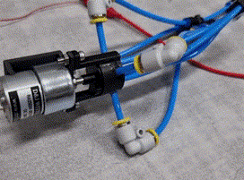
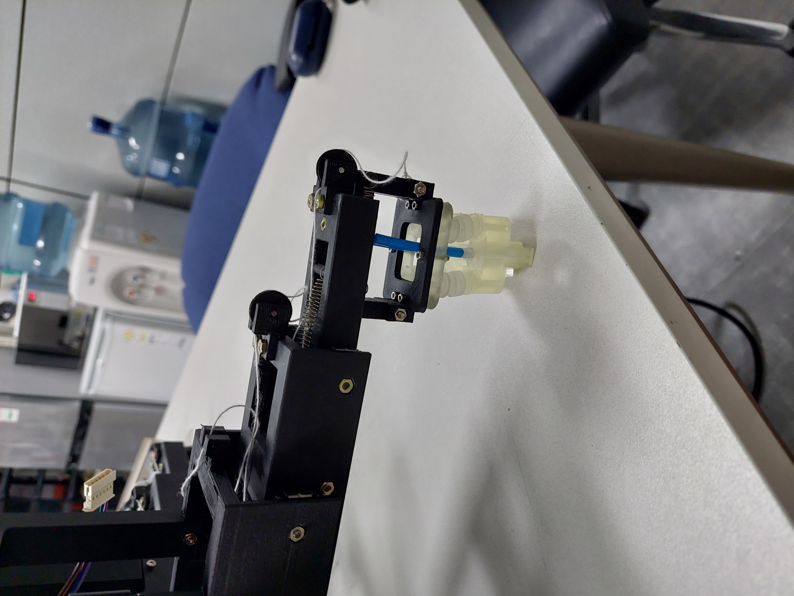

Research Experience
Adaptive Quadrupedal Locomotion Control
: Hybrid control methods integrating model-based and data-driven approaches to implement effective and efficient locomotion over multiple terrains

Hip-flexion Soft Exo-suit Design
: Design of a Hip-flexion Exo-suit to assist the gait of patients


Haptic Interface for Teleoperation of Robotic Manipulator
: Design haptic module (pneumativ fingerpad) and actuation module that enable users to feel the weight of gripped objects
: Reinforce the design of pneumatic gripper for fabric using revolute joints and bridge structures to resolve the deflection issue by the weight of each leg

